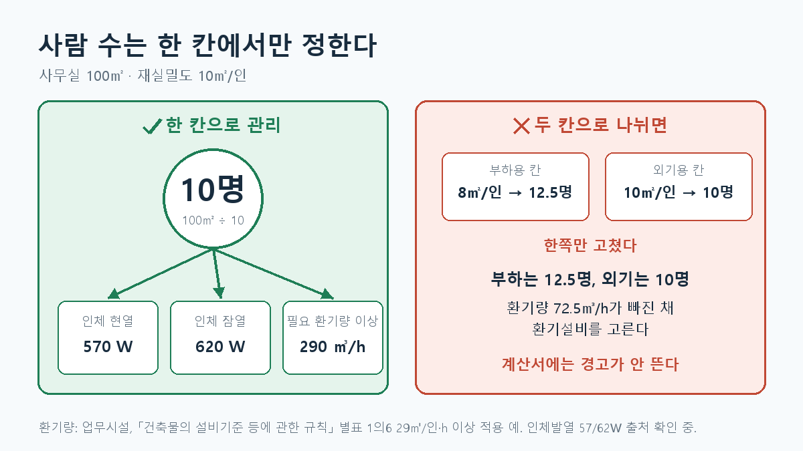

사무실 100㎡에 10명이 있다고 가정해 보겠습니다. 부하계산서에서 이 10명은 사람 몸에서 나오는 열을 만들고, 환기 계산에서는 필요한 외기량을 결정합니다.
문제는 두 계산이 인원을 따로 관리할 때 생깁니다. 부하계산의 재실밀도만 바꾸고 환기 계산은 그대로 두면, 같은 사무실인데 인체발열은 12.5명분, 외기는 10명분이 됩니다. 각 계산식은 정상적으로 작동하므로 불일치가 눈에 잘 띄지 않습니다.
이번 글에서는 인원을 어떻게 정하고, 부하와 환기에 어떻게 연결할지 정리하겠습니다.
기준 상태: 아래의 재실밀도와 인체발열 값에는 출처 확인이 필요한 항목이 있습니다. 법정 환기량과 회사의 계획 단계 입력값은 구분해서 설명합니다.
먼저 실제 인원을 확인합니다
좌석 수나 상주 인원이 정해져 있다면 그 숫자를 사용합니다. 크레인조정실에 실제로 2명이 근무한다면 면적을 재실밀도로 나누어 임의의 인원을 만드는 것보다 2명을 쓰는 편이 낫습니다.
실제 인원을 아직 모를 때는 실 용도에 따라 정한 재실밀도를 계획값으로 사용합니다. 재실밀도가 10㎡/인인 사무실 100㎡라면 계산의 출발점은 10명입니다.
재실밀도는 “한 사람이 차지한다고 가정한 면적”입니다. 숫자가 작아질수록 같은 면적에 더 많은 사람이 있다고 계산합니다.
인원 하나가 여러 계산에 쓰입니다
인체발열은 현열과 잠열로 나눕니다. 현열은 실내 온도를 올리는 열이고, 잠열은 사람이 내놓는 수분과 관련된 부하입니다.
현재 검토 중인 예제값인 현열 57W/인, 잠열 62W/인을 사용하면 10명의 부하는 다음과 같습니다.
| 항목 | 계산 | 결과 |
|---|---|---|
| 인체 현열 | 10인 × 57W/인 | 570W |
| 인체 잠열 | 10인 × 62W/인 | 620W |
이 57W와 62W의 원 출처는 아직 확인하지 못했습니다. 따라서 예제 계산에는 쓸 수 있어도, 출처가 확인된 법정값이나 학회 확정값처럼 소개하지 않습니다.
같은 10명은 환기량 계산에도 들어갑니다. 다만 외기량은 모든 건물에 하나의 ㎥/인·h 값을 곱해 정할 수 없습니다. 건물의 용도, 적용 법령, 환기 방식, 프로젝트 기준을 먼저 확인해야 합니다.
예를 들어 「건축물의 설비기준 등에 관한 규칙」 별표 1의6이 적용되는 업무시설이라면, 해당 별표의 업무시설 필요 환기량은 29㎥/인·h 이상입니다. 이 조건을 적용하는 예제에서 10명의 필요 환기량은 최소 290㎥/h입니다. 이 숫자를 면적과 용도에 관계없이 모든 사무실의 공통 법정값으로 쓰지는 않습니다. (별표 1의6 원문)

인원과 외기 공급 여부는 다른 입력입니다
탕비실에는 사람이 들어올 수 있습니다. 그렇다고 그 실에 외기를 직접 공급하는 방식이 반드시 적용되는 것은 아닙니다. 배기하고 인접 공간에서 보충공기를 받는 구성도 검토할 수 있습니다.
따라서 “직접 공급 외기 없음”을 표현하기 위해 재실인원을 0명으로 만들면 안 됩니다. 그러면 인체발열까지 계산에서 사라집니다.
입력은 다음처럼 나누는 편이 명확합니다.
- 재실인원: 실제 인원 또는 재실밀도로 정한 인원
- 환기 방식: 직접 외기 공급, 인접실 보충공기, 배기 등
- 적용 환기량: 해당 건물과 실에 적용되는 기준으로 산정한 값
ASHRAE의 사무공간 자료도 커피 공간과 간이주방 등을 일반 사무실과 구분해 환기·배기를 다룹니다. 따라서 “탕비실 외기 0”이라는 한 줄만으로 환기 검토가 끝났다고 보면 안 됩니다. (ASHRAE Handbook—HVAC Applications 3장)
앱에서는 인원을 한 곳에서 관리합니다
기존 계산 구조에서는 부하계산용 인원과 외기량 계산용 인원이 서로 다른 상수에서 나올 수 있었습니다. 두 상수가 처음에는 같은 인원을 가리키더라도, 한쪽만 수정하면 결과가 달라집니다.
기본 재실인원을 한 입력에서 계산하고 각 계산에 전달하면 이런 불일치를 줄일 수 있습니다. 용도에 따라 서로 다른 설계인원을 써야 한다면 그 이유와 값을 별도로 표시해야 합니다.
여기서 중요한 것은 ‘미입력’과 ‘실제로 무인’을 구분하는 것입니다. 인원 칸을 비웠다는 이유만으로 0명으로 확정해서는 안 됩니다.
설계할 때 확인할 순서
- 실제 좌석 수와 상주 인원이 있는지 확인합니다.
- 없으면 실 용도에 맞는 계획 재실밀도를 사용하고 그 사실을 표시합니다.
- 인체발열에 적용할 현열·잠열 값과 출처를 확인합니다.
- 해당 건물에 적용되는 환기 기준과 실의 환기 방식을 따로 확인합니다.
- 부하계산과 환기 계산이 같은 기본 재실인원에서 출발하는지 대조합니다.
사람 수는 간단한 입력처럼 보이지만, 냉방부하와 환기설비 양쪽으로 이어집니다. 그래서 저는 인원을 한 곳에서 정하되, 그 인원을 각 계산에 어떻게 적용했는지는 따로 보이게 하려고 합니다.